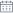

<div class='datepicker filter__date-label'>
  

  <div class="datepicker_removeBlock" *ngIf="currentDate">
    <svg (click)="removeInputValue()"
         class="datepicker_removeInputValue"
         width='9' height='6' viewBox='0 0 16 16' fill='none'
         xmlns='http://www.w3.org/2000/svg'>
      <path fill-rule='evenodd' clip-rule='evenodd'
            d='M10.2623 8.0002L15.5308 2.73153C16.1564 2.10595 16.1564 1.09477 15.5308 0.469188C14.9053 -0.156396 13.8941 -0.156396 13.2685 0.469188L8 5.73786L2.73146 0.469188C2.10589 -0.156396 1.09475 -0.156396 0.469177 0.469188C-0.156392 1.09477 -0.156392 2.10595 0.469177 2.73153L5.73771 8.0002L0.469177 13.2689C-0.156392 13.8945 -0.156392 14.9056 0.469177 15.5312C0.781161 15.8432 1.19074 16 1.60032 16C2.0099 16 2.41948 15.8432 2.73146 15.5312L8 10.2625L13.2685 15.5312C13.5805 15.8432 13.9901 16 14.3997 16C14.8093 16 15.2188 15.8432 15.5308 15.5312C16.1564 14.9056 16.1564 13.8945 15.5308 13.2689L10.2623 8.0002Z'
            fill='#6F7985'/>
    </svg>
  </div>
  <input
    [disabled]="disabled"
    [class.input-wrapper__input_valid]='valid !== undefined && valid'
    [class.input-wrapper__input_invalid]='valid !== undefined && !valid'
    class='input-wrapper__input_default'
    [autocomplete]="'off'"
    [(ngModel)]="currentDate"
    name='datepicker'
    [minDate]="minDate"
    [maxDate]="endDate"
    [readonly]="true"
    ngbDatepicker
    #date='ngbDatepicker'
    (click)='date.toggle()'
    (dateSelect)='selectedDate()'
    (navigate)="highLightDay($event, date)"
    [autoClose]="true"
  >
</div>

<!-- <ng-template #footer>
  <hr>
  <div class="footer">
    <button class="footer__btn" (click)="close(date)">OK</button>
  </div>
</ng-template> -->
